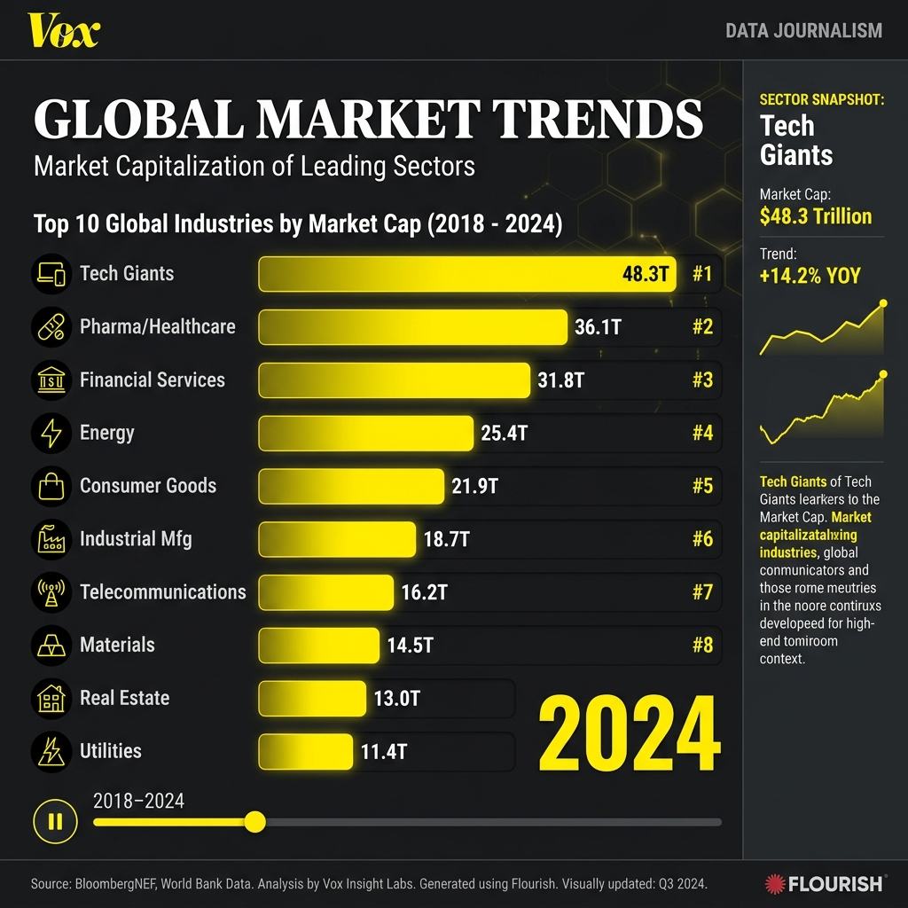
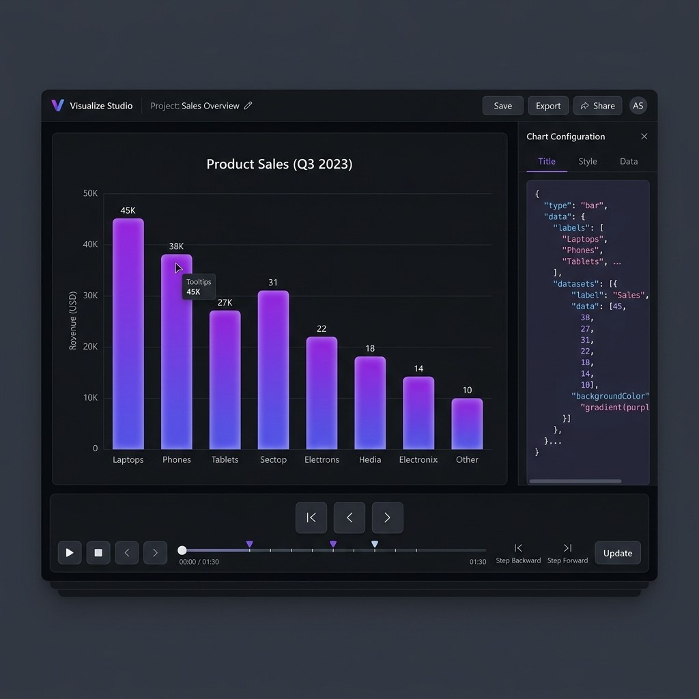

Select a blueprint to start your data story.

High-contrast, bold typography with the signature Vox accent and metadata layer.
Smooth gradients and elegant area fills for tracking growth and momentum.
Track multiple entities racing over time with leading edge labels and smooth path trailing.

Dynamic ranking shifts and horizontal animations for competitive statistical data.
Quick, clean animations for modern reporting. Perfect for simple categorical data.
Focus on the trajectory with clean axes and high-performance rendering.